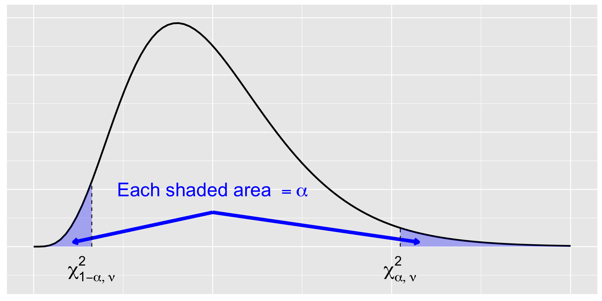
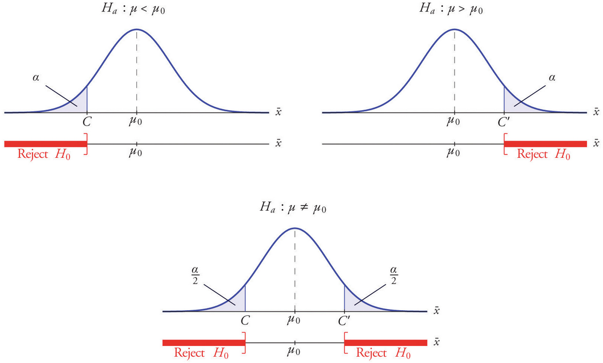

Seminar 03
MA22004
Dr Eric Hall • ehall001@dundee.ac.uk
2024-10-02
Announcements
Attendance

Reminders
- Discuss labs, R, and RStudio at Thu workshop.
- Discuss worksheet 2 at Fri workshop.
- Lab 1 due Fri 2024-10-04 at 17:00.
Outline of today
- Overview of tools for drawing conclusions about the characteristics of a population from data:
- point estimates
- confidence intervals
- hypothesis tests
- Why 0.05?
Recall
What is a statistic?
A statistic is a quantity that can be calculated from sample data.
Prior to obtaining data, a statistic is an unknown quantity and is therefore a random variable (rv).
Examples of statistics
Viewed as estimators for characteristics of the population.
- sample mean, \overline{X} = \frac{1}{m} \sum_{i=1}^m X_i
- sample variance, S^2 = \frac{1}{m-1} \sum_{i=1}^m (X_i - \overline{X})^2
- avg of extreme lengths, \widetilde{X} = \frac{\min_{i\geq 0}(X_i) + \max_{i\geq 0}(X_i)}{2}
Random variables have distributions
Any function of rvs X_i is also a rv and, therefore, has a probability distribution.
Sampling distributions
We refer to the probability distribution for a statistic as a sampling distribution to emphasize how the distribution will vary across all possible sample data.
What are point estimates?
A point estimator
Consider iid X_1, X_2, \dots, X_m \sim F(\theta)\,.
A point estimator \widehat{\theta}_m of \theta is obtained by selecting a suitable statistic g\,, \widehat{\theta}_m = g(X_1, \dots, X_m) \,.
Closing the deal: point estimate
A point estimate of a parameter \theta is a single number that we regard as a sensible value for \theta\,.
A point estimate \widehat{\theta}_m is computed from an estimator using sample data.
Overloaded notation
The symbol \widehat{\theta}_m is typically used to denote both the estimator and the point estimate resulting from a given sample.
Uncertainty in a point estimate
The standard error is one measure of the precision of an estimate.
The standard error of an estimator \widehat{\theta} is the standard deviation: \sigma_{\widehat{\theta}} = \sqrt{\mathop{\mathrm{Var}}(\widehat{\theta})}\,.
Estimated standard error is denoted by \widehat{\sigma}_{\widehat{\theta}} or simply s_{\widehat{\theta}}\,.
What are confidence intervals?
A confidence interval
An interval estimate reports an entire range of plausible values for the parameter of interest.
A confidence interval (CI) is an interval estimate that makes a probability statement about the degree of reliability, or the confidence level, of the interval.
CI definition
A 100(1-\alpha)\% confidence interval for a parameter \theta is a random interval, C_m = (L_m , U_m)\,, where L_m = \ell(X_1, \dots, X_m) and U_m = u(X_1, \dots, X_m) are functions of the data, such that, P_{\theta}(L_m < \theta < U_m ) = 1 - \alpha\,, for all \theta \in \Theta (the parameter space).
What a CI is not…
- A 95\% confidence level does not mean there is a 95\% probability that the population parameter lies within a given interval.
- A 95\% confidence level does not mean that 95\% of the sample data lie within the confidence interval.
- A particular confidence level of 95\% calculated from an experiment does not mean that there is a 95\% probability of a sample parameter from a repeat of the experiment falling within this interval.
What are hypothesis tests?
Two hypotheses
Methods for determining which of two contradictory claims, or hypotheses, about a parameter is correct.
- H_0 the null hypothesis is a claim that we initially assume to be true by default.
- H_a the alternative hypothesis is an assertion that is contradictory to H_0\,.
Hypothesis testing
A hypothesis test is a statistical procedure.
The test procedure is based on the initial assumption that H_0 is true and asks if the available data provides sufficient evidence to reject H_0\,.
If the observations disagree with H_0\,, then we reject the null hypothesis. On the other hand, if the sample evidence does not strongly contradict H_0\,, then we continue to believe H_0\,.
No “accepting” the null
The two possible conclusions of a hypothesis test are: reject H_0 or fail to reject H_0\,.
Know when to fold ’em
What does evidence for a hypothesis test look like?
A test statistic T is a function of the sample data (like an estimator).
The decision to reject or fail to reject H_0 will involve computing the test statistic.
How extreme is the evidence?
A rejection region R is the collection of values of the test statistic for which H_0 is to be rejected in favor of the alternative: R = \left\{ x : T(x) > c \right\}\,, where c is referred to as a critical value.
For observed test statistic t, if t \in R then we reject H_0\,. The alternative is that t \not\in R and in this case we fail to reject H_0\,.
Recall: critical values
Critical values are quantiles of the reference distribution. Critical values are NOT areas.
- Using R:
q+distname, e.g.,qnorm,qt,qchisq, … - Using table
Balancing act
The basis for choosing a rejection region involves balancing Type I and Type II errors. A conclusion is reached in a hypothesis test by selecting a significance level \alpha for the test linked to the maximal type I error rate.
- Type I error occurs if H_0 is rejected when H_0 is actually true.
- Type II error is made if we fail to reject H_0 when H_0 is actually false.
How do P-values fit?
A P-value is the probability, assuming H_0 is true, of obtaining a test statistic at least as contradictory to H_0 as the value calculated from the sample data.
Smaller P-values indicate stronger evidence against H_0\,.
- If P \leq \alpha then we reject H_0 at significance level \alpha\,.
- If P \geq \alpha we fail to reject H_0 at significance level \alpha\,.
The skinny on hypothesis testing
Two routes to the same answer!
But both are really the same.
One way:
- Compute the value of an appropriate test statistic.
- Determine the P-value, probability calculated assuming the null is true of observing a test statistic value at least as contradictory to H_0 as what was obtained from data.
- For given \alpha\,, reject H_0 if evidence is strong, i.e. P < \alpha\,. If evidence is not strong enough, fail to reject H_0\,.
The skinny on hypothesis testing
Two routes to the same answer!
But both are really the same.
Another way:
- Compute the value of an appropriate test statistic.
- Determine the critical value for the level \alpha and hence identify the rejection region for the hypothesis test.
- If statistic falls in rejection region, reject H_0 because evidence is strong. If statistic falls outwith rejection region, we fail to reject H_0 because evidence is not strong enough.
Null distribution

E.g., consider hypothesis tests for a population mean.
- Distribution for \bar{X}
- Under the assumption that H_0 is true, so curve is centered at \mu_0
- Level \alpha is a probability (area)
- Critical value c is a point
- Test statistic?
Why 0.05?
Emily Dickinson and monkeys on the stair
Sarah Lee, Wikimedia Commons, CC-BY-SA 4.0
Personal significance level
What is our MA22004 personal significance level?
Summary
Today we discussed: (point estimation), confidence intervals, and hypothesis tests.
We engaged in an activity to understand “Why 0.05?”
Today’s materials
Slides posted to https://dundeemath.github.io/MA22004-seminar03.